| Symbol Art | Downloads | Description | Original Art by |
|---|---|---|---|
 |
Speedrunner Mario In the Project file, you can move Mario around as a whole with the folder. This can be handy as a template. |
Terminal Montage | |
 |
change da world my final message. goodb ye It's on a transparent background and the message can be moved around. |
Internet Meme | |
 |
A crying Alice A lot of fine lines when recreating this. I was originally going to not make the background due to reaching the symbol limit, but I improvised with icons that don't correspond. I can't find the original source, Danbooru source leads to dead url. |
yukiwo | |
 |
Jack Frost hugging Dante from the Devil May Cry series Done this before the Persona collab was announced, so I'm pretty stoke I ported one Jack Frost art to PSO2. I'll admit, it was a bit of a rush job with the line art, but it does look a bit better ingame. |
pspsno_pan | |
| 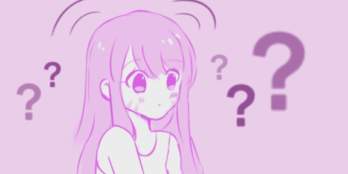 | A confused D.Va One of my earlier anime based SA ports. The simple colors and little details make it easy to work with. |
Pinterest... ok, I'll need to do a search | |
| 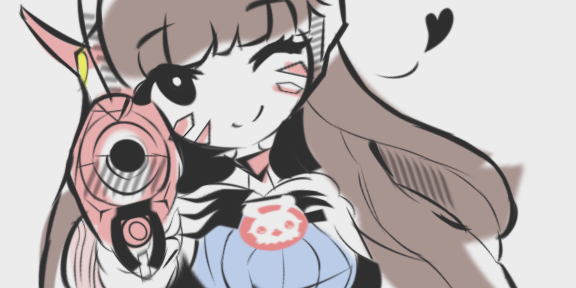 | D.Va Pew-Pew! I absolutely fell in love with k3lly's artstyle and wanted to use it as a SA. It was an earlier SA port and I hit so many times the limit it wasn't funny. I had to do a lot of creative symbol count reducing. However, the fine details were hard to replicate and replicating the pencil style is kinda impossible (at least for me). Check the original artwork, it's really good! |
k3lly | |
 |
I'VE COME TO MAKE AN ANNOUNCEMENT Only time I've touched anything 3D for an SA. While the source is Sonic Adventure 2 for the Art, I've linked to the origin of the joke, the SnapCube Realtime Dub of SA2's Dark Story. Really funny! The head was so small that the online editor struggle in positioning, so it was the best I could do. |
Sonic Adventure 2 Realtime Dub by SnapCube | |
| 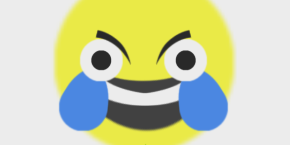 | WHEEZE SO FUNNY (can't wait for the deepfried version) | The Internet | |
 |
EXTRA THICC I'll admit, I've recently seen better versions of it floating on Ship 2. But I still prefer my text... |
Samurai Jack | |
| 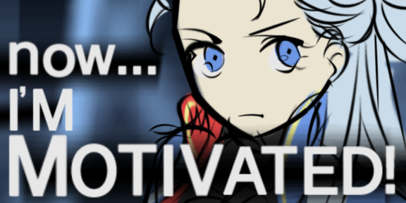 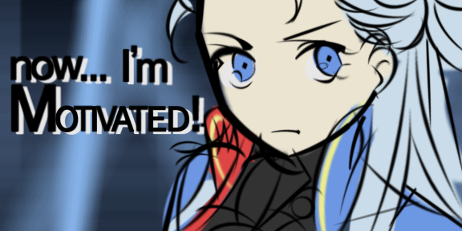 |
💽 Download A (.sar) |
Now... I'm motivated! A bit of a joke SA I've made for someone in my alliance discord, who asked if I could do the Vergil "Now... I'm motivated!" meme. I kinda wanted to do it, but the images were too high quality for my skills. So I searched danbooru and found a female Vergil and said, "wish granted, but vergil is now a girl". Wasn't too pleased with how the text was readable on first go ingame (B), so I did (A), but now you can see less details on Vergil. Both are available to download. |
fuka (kirrier.k) |
 |
Formidable from Azur Lane I hit the symbol limit real quick here due to poor management. I'm not too pleased with it and it does an injustice to the beauty of the original art. Maybe you wanna improve it? Those SAML files aren't there for nothing! |
gomashio_ponz | |
| 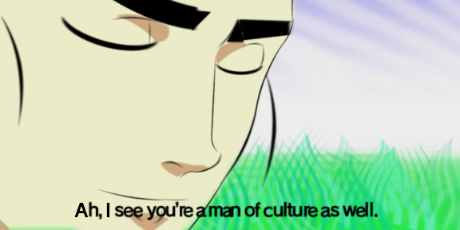 | Ah, I See you're a man of culture as well I see some stores on Ship 2 with an overweight version and their subtitles looks like they were made by cavemen. Heh. I prefer my version, even if the field looks lamer than the other one. |
Some meme | |
 |
I need healing! I need to do a TF2 version but I'm looking for a good, simple and clean art of the Medic. Ain't too fond of Overwatch anymore. |
I found it on a YT thumbnail. | |
 |
Metal Gear Solid Codec template Not much to see. Too lazy to make portraits. |
Metal Gear Solid | |
 |
MS Paint Thinking emoji I'm sure someone asked for this. |
The Internet | |
| 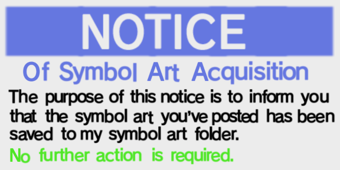 | Notice of SA Acquisition I wanted to have a SA stealing meme, but I'm not premium: I have to live with 10 slots. Oh well, saying in chat I stole someone's SA is less impressive... |
The Internet | |
 |
One Eternity Later I was lazy with the BG, but I made this because of Challenge Mode. Please visit the game mode some day, okay? It's fun! |
Sponge Bob | |
| 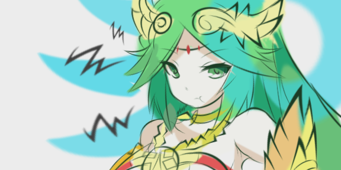 | Palutena pouting Another one of my earlier anime SAs, but this time I took a lot of time with it. There are a few variations and hit the limit multiple times. I don't use this SA often at all weirdly enough. The original artwork is pretty, please check out the source! |
karkan3 | |
| 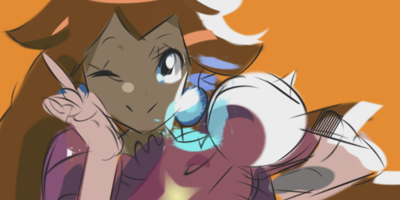 | Melee Peach saying Suhweet! Another art I had to port when I saw it online. The style is so good and the SA probably doesn't do it justice. Please check the source out, their art is pretty amazing! (also, the colors are due to the shading) |
moxie2D | |
| 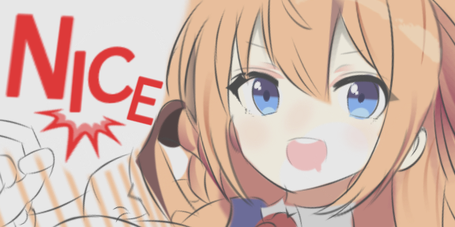 | Pecorine I have no idea why this character's show/game is popular, but I'll admit the design is cute. I ran out of Symbols real quick and the colouring/shading could not be finished. Sorry! The original art has a very nice colouring/shading going on and this probably didn't do it justice. Sorry... :( |
gamuo | |
| 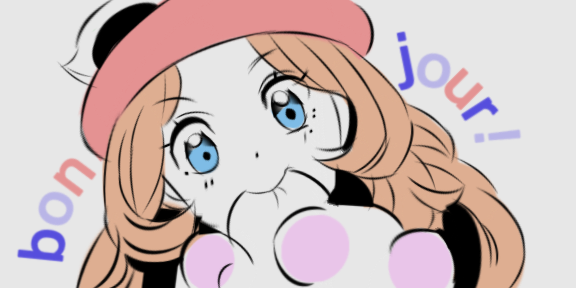 | Serena saying Hello in French = Bonjour I think I nailed the port for this one for the most part. Simple line art and colouring made it ideal. Danbooru links to a direct twitter image without the tweet itself. |
shuri | |
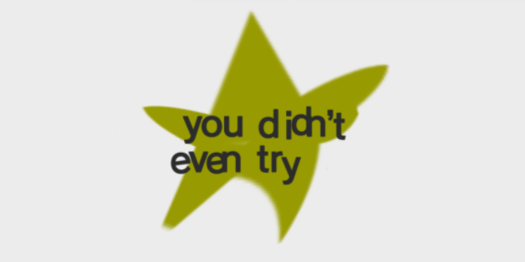 |
💽 Download A(.sar) |
Use these to shame your friends when they defeat the trapped lillipan with a single attack. | The Internet |
 |
Many others have done better versions, it's only here for completion sake. | Pokemon | |
 |
You don't have a towering pillar of hats you poor peasant? Scoffs. Second SA I made. I'm simultaneously impressed by the little details and embarrased by the other little details. Weird huh? Probably one of the few "old-timey" style SAs around I think. |
Team Fortress 2 | |
 |
nope.avi First SA I made and it kinda shows. There is a reason I avoid 3D. |
Team Fortress 2 | |
| 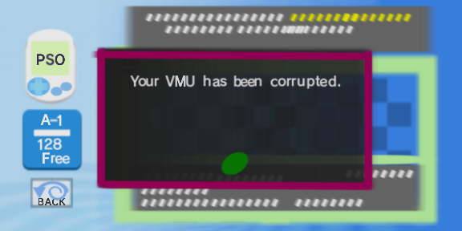 | Dreamcast Menu Interface (VMU Corrupted) This could probably scare any old PSO1 player. But ingame the text is too blurry. Use this on a Symbol Art Projector in front of a Dreamcast furniture for better results. Working on the Dreamcast UI makes me want to do something similar for my game, but I utterly hate working on UI. It takes forever, especially when you're a pleb who fails to understand how on earth XML could even connect with your game logic and UI and movements... (Yes, I do all my UI in code. Send help.). |
Dreamcast | |
 |
BSOD I'm surprised I didn't see anyone make this (at least on Ship 2), especially with all the hate surrounding the MS Store version and it's raid boss installer. Funnily enough, I saw someone use this as a Store SA, that's cool! |
Windows |